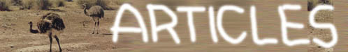

MY LIFE VS MY DREAM ****LEPTOSOME*
|
以下一小节的内容针对高二年级第二学期。首先是一篇《我们为什么要做作业》，从2000.9一直写到2001.2，内部包含诸多老师语录，请北大附中的同学务必打开。另外一篇《班里起义了》，为2001年2月15日夜梦的记录，或许是我有生以来能够记下来的最完整的一个梦。这篇文章献给所有预备步佛罗依德后尘的人。
印象中当人们举例子说明几率的时候，总是会计算一只猴子坐在打字机前面，打出莎士比亚全集的几率。我就是那只猴子，整个假期以及开学后的日日夜夜总时坐在计算机的前面，乱打着一些文字。我曾经完成了一段关于的《青玉案》(2000/8/26)文字。我会在《雨夜》(2000/8/9)出行，大喊《I am a person》(2000/8/22)，《又一次雨中漫步》(2000/9/4)却一点也不觉得厌倦。我过《浑浑噩噩》(2000/8/24)的生活，做《失落的梦》(2000/8/29)，想不明白问题的时候就说《LEPTOSOME我问你》(2000/8/28)。我会整中午地站在天桥上叹息《风好大》(2000.10.12)，愿上帝可以《给我一片忧伤》(2000.10.25)。我深深厌倦考试，我渴望又不愿意《再别考场》(2000/9/21)，我会对着考试说《如果我说你是魔鬼》(2000.11.6)，我还会叹息什么是《血和作业本的合金》(2000.11.1)，而且我会时时刻刻记得你的存在。
高一结束的这个假期，我去了一次四川，具体旅程安排为：重庆半天（歌乐山、朝天门、解放碑），内江一天（和我的亲戚们联欢），成都两天（武侯祠、杜甫草堂、博物馆、望江楼），乐山半天（大佛），峨眉山一天半（日出、猴子、寺院和不可言表的仙境）。我愿意为此《谈我对峨眉山山路的感受》[照片]，并且抒发一下我对于《变成黄河的长江》的感受，再谈一谈让我十分伤感的《天气谋杀案》。注意：这三篇文章是一个下午OVER的。
我高一下学期的著作，《我的高中老师们》，别名ZOO（动物园），一篇没有任何写作技巧但是最有望让你笑破肚皮的作品，一篇本意是应付语文老师的作业效果却出呼意料的文章(本文已发表在新世纪第一期《作文通讯》上，如果不算扉页和编辑的话是第一篇，大家快去买啊)。还有一篇名为《谈人的自欺欺人》的随笔。PLEASE欣赏或返回！
初三的时候做了一个调查，全部原创，虽然有始无终。不过或许阁下愿意当那第112名受调查者（参加人数总计111人）。试一试吧，不过它可只面对中学生。我初中时写的一组文章中现存的唯一一篇，《A老师》，大概也是初三写的，打开看一看吧！
另外就是想奉献给大家几首打油诗，供大家消遣之用。这几乎是我整个初中生活灵感及生活的最高境界及最真写照，完成日期大多是初二和初三。大概现在已经再也没有那种闲情逸致了。长大了，成熟了，还是麻木了，我也不知道。或许很颓废，不过当时本来就便如此。但是当时，这些东西的确是我的一种发泄手段和精神支柱：《浪淘沙 不觉夜已寒》，《南乡子 无处向前方》，《七绝 狗熊》，《清平乐 至孙绵羊》，《如梦令 一个叫做乱马的人》，《山坡羊 考》，《乌夜啼 独站窗头》，《乌夜啼 锁人心》，《西江月 焦耳》和《虞美人 做题考试何时了》。很有意思的!另外，我一直非常的喜欢我的同学脏猫(张恺)写的诗，并想在这里献给大家。现在终于争得了他的同意。希望大家喜欢。
我第一篇曾经发表过的文章，1996年9月15日(古代了)，《北京晚报》。名字叫做《无障碍通道障碍多》，像绕口令，没有关系。打开吧，这样可以体会一下儿时的我是否比现在纯真的多。
我正在一边听The Beatles(披头士)的音乐一边做我的网页，查找我原来写的打油诗。我也不知道为什么，它我一种头脑麻木的感觉，非常的特殊，痛苦，却又是一种享受。我不知不觉又开始思考生活的诠释(胡思乱想可能是我的家族病)，这可能是一种很痛苦的事情，因为你感觉到你在这个世界上，却根本不知道诸如“你是谁”之类可能是可能是最最根本的问题。不过我还是决定暂时放弃思考，因为在我那个放了成堆打油诗的信封里找到了我初一的时候写的关于校服的叙述，如果你也很讨厌校服，就赶快打开吧！
|